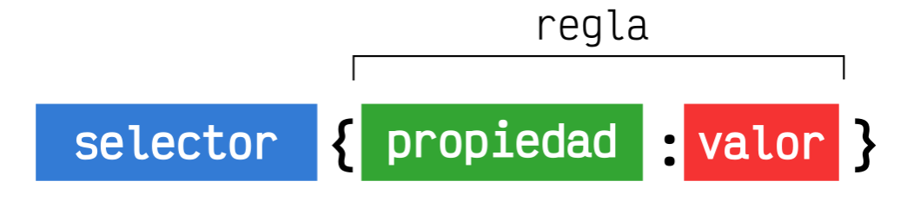
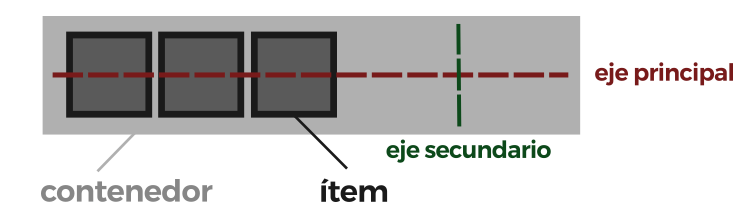

Introducción
CSS es un lenguaje de hojas de estilos creado para controlar el aspecto o presentación
de los documentos
electrónicos definidos con HTML y XHTML. CSS es la mejor forma de separar los contenidos y su
presentación y es imprescindible para crear páginas web complejas.
Separar la definición de los contenidos y la definición de su aspecto presenta numerosas ventajas, ya
que obliga a crear documentos HTML/XHTML bien definidos y con significado completo (también llamados
"documentos semánticos"). Además, mejora la accesibilidad del documento, reduce la complejidad de su
mantenimiento y permite visualizar el mismo documento en infinidad de dispositivos diferentes.
Al crear una página web, se utiliza en primer lugar el lenguaje HTML/XHTML para marcar los contenidos,
es decir, para designar la función de cada elemento dentro de la página: párrafo, titular, texto
destacado, tabla, lista de elementos, etc.
Una vez creados los contenidos, se utiliza el lenguaje CSS para definir el aspecto de cada elemento:
color, tamaño y tipo de letra del texto, separación horizontal y vertical entre elementos, posición de
cada elemento dentro de la página, etc.
Estructura CSS
Al igual que los documentos HTML, los documentos CSS son archivos de texto donde se escribe una serie de órdenes y el cliente (navegador) las interpreta y aplica a los documentos HTML asociados.
Sintaxis básica
La estructura CSS se basa en reglas que tienen el siguiente formato:
- Selector: El selector es el elemento HTML que vamos a seleccionar del documento para
aplicarle un
estilo concreto. Por ejemplo, con p seleccionaríamos todas las etiquetas
del HTML. Más adelante veremos que esto puede ser mucho más complejo, y dedicaremos una serie de capítulos exclusivamente a este tema.
- Propiedad: La propiedad es una de las diferentes características que brinda el lenguaje CSS y que aplicaremos al selector para darle estilo.
- Valor: Cada propiedad CSS tiene una serie de valores concretos a que se le pueden asignar, con los que tendrá uno u otro comportamiento.
EJEMPLO
nav{
background: #333333; //color del navegador
}
Margenes y Rellenos
Margenes (Margin)
En el modelo de cajas, los márgenes (margin) son los espacios exteriores de un elemento. Es decir, el espacio que hay entre el borde de un elemento y su exterior.
- margin-top: Establece un tamaño de margen superior.
- margin-left: Establece un tamaño de margen a la izquierda.
- margin-right: Establece un tamaño de margen a la derecha.
- margin-bottom: Establece un tamaño de margen inferior.
Podemos aplicar diferentes márgenes a cada zona de un elemento utilizando cada una de estas propiedades, o dejando al nevegador que lo haga de forma automática indicando el valor auto.
Rellenos (Padding)
Al igual que con los márgenes, los padding tienen varias propiedades para indicar el relleno de cada zona:
- Padding-top: Aplica un relleno interior en el espacio superior de un elemento.
- Padding-left: Aplica un relleno interior en el espacio izquierdo de un elemento.
- Padding-right:Aplica un relleno interior en el espacio derecho de un elemento.
- Padding-bottom: Aplica un relleno interior en el espacio inferior de un elemento.
Hay que recordar diferenciar bien un margin de un padding, puesto que no son la misma cosa. Los rellenos (padding) son los espacios que hay entre los bordes del elemento en cuestión y el contenido del elemento (por la parte interior). Mientras que los márgenes (margin) son los espacios que hay entre los bordes del elemento en cuestión y los bordes de otros elementos (parte exterior).
Bordes
En CSS es posible especificar el aspecto que tendrán los bordes de cualquier elemento HTML, pudiendo incluso, dar diferentes características a zonas particulares del borde, como por ejemplo, el borde superior, el borde izquierdo, el borde derecho o el borde inferior.
Propiedades de bordes
Las propiedades básicas y específicas de los bordes en CSS son las siguientes:
- boder-color: Especifica el color que se utilizará en el borde.
- border-width: Especifica un tamaño predefinido para el grosor del borde.
- border-style: Define el estilo para el borde a utilizar (ver más adelante).
Estilo de borde más usado
el borde más frecuente suele ser solid, que no es más que un borde liso y continuo. Pueden utilizarse cualquiera de los estilos indicados en la tabla anterior e incluso combinar con otras propiedades. Recuerda que si no aplica una de ellas, se aplica el valor por defecto.
Ejemplo
nav{
border: solid #333333 2px;
}
Colores
Uno de los primeros cambios de estilo que podemos pensar realizar en un documento HTML es hacer variaciones en los colores de primer plano y de fondo. Esto es posible con las primeras dos propiedades que veremos a continuación:
- color: Cambia el color del texto que está en el interior de un elemento.
- background-color: Cambia el color de fondo de un elemento.
La propiedad color establece el color del texto, mientras que la propiedad background-color establece el color de fondo del elemento.
Los formatos más usados para asignar los colores
Formato RGB
Uno de los métodos más conocidos por los diseñadores gráficos es utilizar el formato RGB. Las siglas RGB significan rojo, verde y azul, por lo que cada cifra (del 0 al 255) representa la intensidad de cada componente de color. Como se puede ver en la siguiente imagen, si utilizamos una cantidad (0, 0, 0) de cada canal, obtenemos el color negro. En cambio, si utilizamos una cantidad (255, 0, 0), obtendremos el color rojo.
Ejemplo
//Propiedad Color
p{
color: rgb(125, 80, 10);
}
//Propiedad Background-color
nav{
background-color: rgb(125, 80, 10);
}
Formato Hexadecimal
El formato hexadecimal es el más utilizado por los desarrolladores web, aunque en principio puede
parecer
algo extraño y complicado, sobre todo si no has oído hablar nunca del sistema hexadecimal (sistema en
base 16 en lugar del que utilizamos normalmente, en base 10).
Cada par de letras simboliza el valor del RGB en el sistema de numeración hexadecimal, así pues, el
color #FF0000, o sea HEX(FF,00,00), es equivalente al RGB(255,0,0), que es también equivalente al HSL(0,
100%, 100%). Veamos algunos ejemplos para clarificarlo:
Ejemplo
//Propiedad Color
p{
color: #FFFFFF;
}
//Propiedad Background-color
nav{
background-color: #333333;
}
Fondos
Es posible que, buscando hacer un diseño más avanzado, en lugar de utilizar un color de fondo quieras utilizar imágenes. Para ello, CSS te proporciona la propiedad background-image, con la cuál puedes indicar imágenes de fondo o, como veremos más adelante, incluso degradados de varios colores.
Imagenes de Fondo
En el caso de querer utilizar una imagen de fondo, como ya hemos dicho, utilizaremos la propiedad background-image y en el valor, el nombre de la imagen (o la dirección donde está alojada), siempre rodeada del texto url().
Porpiedades para ingresar una imagende Fondo
- background-image: none: No utiliza ninguna imagen de fondo.
- background-image: url(imagen.jpg): Usa la imagen de nombre imagen.jpg como fondo.
En el caso de que sólo se coloque el nombre de la imagen (por ejemplo, imagen.jpg), el navegador buscará la imagen en la misma carpeta donde está el archivo CSS. Esto es lo que se llama una ruta relativa. En el caso de que se coloque la ruta completa, por ejemplo https://i.emezeta.com/img/logo.png, se accederá a la imagen alojada en esa dirección web. Esto es lo que se llama ruta absoluta.
Ejemplo
//Insertar una iamgen de fondo
body{
background-iamge: url(https://i.emezeta.com/img/logo.png):
}
Fuentes y Tipografías
Las tipografías (también denominadas fuentes) son una parte muy importante del mundo de CSS. De hecho, son uno de los pilares del diseño web. La elección de una tipografía adecuada, su tamaño, color, espacio entre letras, interlineado y otras características pueden variar mucho, de forma consciente o inconsciente, la percepción en la que una persona interpreta o accede a los contenidos de una página.
Propiedades básicas
Existe un amplio abanico de propiedades CSS para modificar las características básicas de las tipografías a utilizar. Aunque existen muchas más, a continuación, veremos las propiedades CSS más básicas para aplicar a cualquier tipo de tipografía:
- font-family: Indica el nombre de la fuente (tipografía) a utilizar.
- font-size: Indica el tamaño de la fuente.
- font-style: Indica el estilo de la fuente.
- font-weight: Indica el peso (grosor) de la fuente (100-800).
Ejemplo
p{
font-size: 15px;
font-family: Arial, Helvetica, sans-serif;
font-weight: 600;
}
Texto y Alineaciones
CSS dispone de ciertas propiedades relacionadas con el texto de una página, pero alejándose de criterios de tipografías, y centrándose más en objetivos de alineación o tratamiento de espaciados. Veamos algunas de estas propiedades:
- letter-spaging: Espacio entre letras (tracking)
- word-spacing: Espacio entre palabras
- line height: Altura de una línea (interlineado)
- text-indent: Indentación de texto (sangría)
- white-space: Comportamiento de los espacios
- tab-size: Ancho de las tabulaciones (espacio o tamaño)
- direction: Dirección del texto
Alineaciones
También existen varias propiedades CSS que permiten modificar las diferentes alineaciones de los textos en su conjunto. Veamos un resumen de ellas:
- text-align: Justificación del texto
- text-justify: Método de justificación de textos
- ext-overflow: Comportamiento cuando el texto no cabe
Propiedad Position
A grandes rasgos, y como aprendimos en temas anteriores, si tenemos varios elementos en línea (uno
detrás de otro) aparecerán colocados de izquierda hacia derecha, mientras que si son elementos en bloque
se verán colocados desde arriba hacia abajo. Estos elementos se pueden ir combinando y anidando
(incluyendo unos dentro de otros), construyendo así esquemas más complejos.
Hasta ahora, hemos estado trabajando sin saberlo en lo que se denomina posicionamiento estático
(static), donde todos los elementos aparecen con un orden natural según donde estén colocados en el
HTML. Este es el modo por defecto en que un navegador renderiza una página.
Sin embargo, existen otros modos alternativos de posicionamiento, que podemos cambiar mediante la
propiedad position, que nos pueden interesar para modificar la posición en donde aparecen los diferentes
elementos y su contenido.
A la propiedad position se le pueden indicar los siguientes valores:
- static: Posicionamiento estático. Utiliza el orden natural de los elementos HTML.
- relative: Posicionamiento relativo. Los elementos se mueven ligeramente en base a su posición estática.
- absolute: Posicionamiento absoluto. Los elementos se colocan en base al contenedor padre.
- fixed: Posicionamiento fijo. Idem al absoluto, pero aunque hagamos scroll no se mueve.
- sticky: Posicionamiento «pegado». Similar al relativo, usado para pegar menús a la parte superior.
Ejemplo
section{
position: fixed
}
Flexbox CSS
Tradicionalmente, en CSS se ha utilizado el posicionamiento (static, relative, absolute...), los
elementos en línea o en bloque (y derivados) o los float, lo que a grandes rasgos no dejaba de ser un
sistema de creación de diseños bastante tradicional que no encaja con los retos que tenemos hoy en día:
sistemas de escritorio, dispositivos móviles, múltiples resoluciones, etc.
Flexbox es un sistema de elementos flexibles que llega con la idea de olvidar estos mecanismos y
acostumbrarnos a una mecánica más potente, limpia y personalizable, en la que los elementos HTML se
adaptan y colocan automáticamente y es más fácil personalizar los diseños. Está especialmente diseñado
para crear, mediante CSS, estructuras de una sóla dimensión.
Conceptos
Para empezar a utilizar flexbox lo primero que debemos hacer es conocer algunos de los elementos básicos de este nuevo esquema, que son los siguientes:
- Contenedor: Es el elemento padre que tendrá en su interior cada uno de los ítems flexibles. Observa que al contrario que muchas otras estructuras CSS, por norma general, en Flex establecemos las propiedades al elemento padre.
- Eje principal: Los contenedores flexibles tendrán una orientación principal específica. Por defecto, es en horizontal (en fila).
- Eje secundario: De la misma forma, los contenedores flexibles tendrán una orientación secundaria, perpendicular a la principal. Si la principal es en horizontal, la secundaria será en vertical, y viceversa.
- Item: Cada uno de los hijos flexibles que tendrá el contenedor en su interior.
Grid CSS
Uno de los procesos más problematicos y frustrantes de CSS, sobre todo para novatos o principiantes, es
el proceso de colocar y distribuir los elementos a lo largo de una página. Mecanismos como
posicionamiento, floats o elementos en bloque o en línea, suelen ser insuficientes (o muy complejos)
para crear un layout o estructuras para páginas web actuales.
El sistema flexbox es una gran mejora, sin embargo, está orientado a estructuras de una sola dimensión,
por lo que aún necesitamos algo más potente para estructuras web más específicas o complejas. Con el
paso del tiempo, muchos frameworks y librerías utilizan un sistema grid donde definen una cuadrícula
determinada, y modificando los nombres de las clases de los elementos HTML, podemos darle tamaño,
posición o colocación.
Grid CSS nace de esa necesidad, y recoge las ventajas de ese sistema, añadiendole numerosas mejoras y
características que permiten crear rápidamente cuadrículas sencillas y potentes de forma prácticamente
instantánea.
Conceptos
Antes de comenzar con Grid CSS, quizás sería conveniente dominar el sistema Flexbox, ya que Grid toma la
filosofía y bases de él. Para utilizar Grid CSS necesitaremos tener en cuenta una serie de conceptos que
utilizaremos a partir de ahora y que definiremos a continuación:
- Contenedor: El elemento padre contenedor que definirá la cuadrícula o rejilla.
- Item: Cada uno de los hijos que contiene la cuadrícula (elemento contenedor).
- Celda (grid cell): Cada uno de los cuadritos (unidad mínima) de la cuadrícula.
- Area (grid area): Región o conjunto de celdas de la cuadrícula.
- Banda (grid track): Banda horizontal o vertical de celdas de la cuadrícula.
- Línea (grid line): Separador horizontal o vertical de las celdas de la cuadrícula.